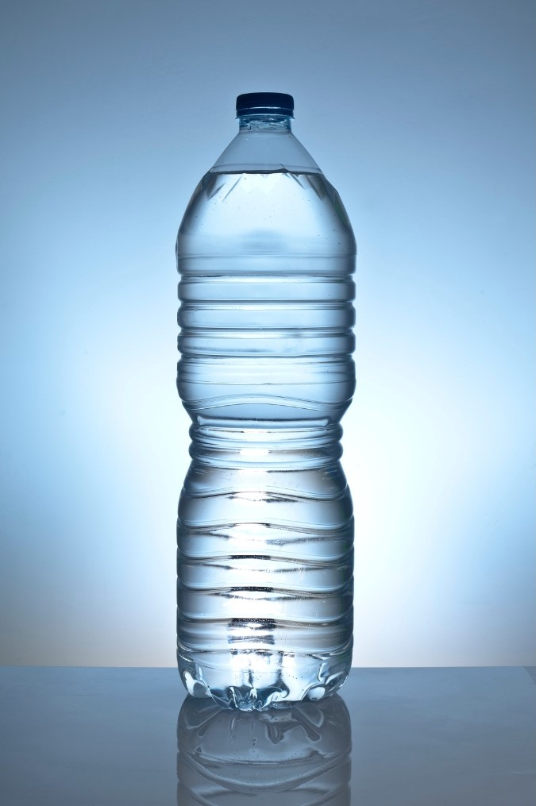
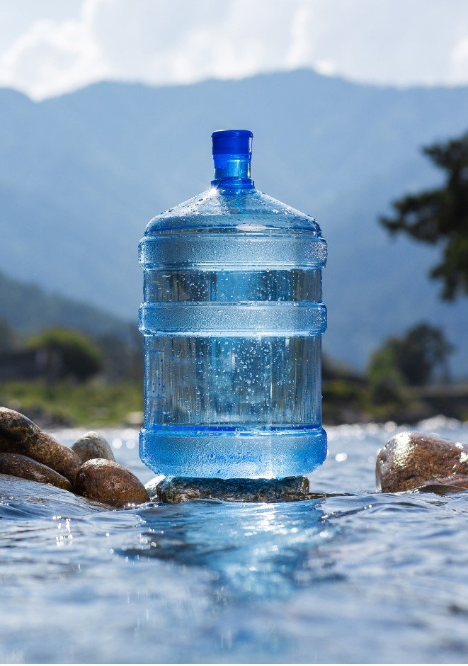
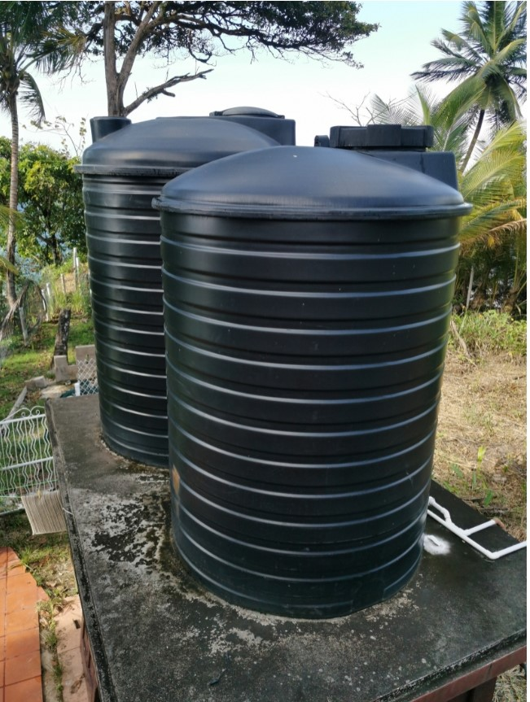

Embases de 1 litro a 10 litros

Botellas de 20 litros

La recarga de agua potable es crucial para la salud pública, ya que garantiza un suministro constante de agua limpia y segura para el consumo humano. Este proceso mejora la calidad del agua al permitir su filtración natural, eliminando contaminantes y patógenos que pueden causar enfermedades. Al asegurar que las comunidades tengan acceso a agua potable confiable, se reducen los riesgos de enfermedades transmitidas por el agua y se promueve el bienestar general.

Conserva recursos hídricos y protege ecosistemas al gestionar el uso del agua y asegurar su purificación, beneficiando la biodiversidad y promoviendo la sostenibilidad
Desde el punto de vista Social SICAP, previene enfermedades y garantiza acceso equitativo al agua potable, fomentando la educación y la confianza en las instituciones, y promoviendo una ciudadanía sana, joven y fuerte.
Optimiza la gestión de recursos hídricos, reduce costos y genera ingresos a través de impuestos, asegurando precios accesibles y promoviendo el desarrollo económico sostenible.
El Sistema Integral de Control de Agua (SISCA) se caracteriza por su monitoreo en tiempo real, automatización de procesos y gestión eficiente de recursos. Ofrece una interfaz amigable, promueve la transparencia y se adapta a diferentes contextos. Además, fomenta la educación comunitaria sobre el uso responsable del agua y utiliza análisis de datos para mejorar la planificación.
se fundamentan en la creciente crisis del agua y la escasez en diversas regiones, junto con la contaminación que ha provocado enfermedades relacionadas con el agua. Además, existe una notable desigualdad en el acceso al agua potable, lo que resalta la necesidad de soluciones equitativas. Los avances tecnológicos en monitoreo y automatización han permitido una gestión más eficiente, mientras que las políticas ambientales globales han impulsado la sostenibilidad.
Ministerio del Poder Popular para el Ambiente, Ministerio del Poder Popular para la Salud, Compañías de Agua Regionales y Gobiernos Locales y Municipales.
A través de SICAP es posible llevar a cabo el llenado de botellas de cualquier tamaño, ya sean grandes o pequeñas, adaptándose a las necesidades específicas del cliente. Además, el sistema permite gestionar ventas al por mayor, ofreciendo una solución eficiente y versátil para empresas que requieran manejar grandes volúmenes de producto. Con esta herramienta, se optimizan los procesos y se garantiza un servicio ágil y de alta calidad.